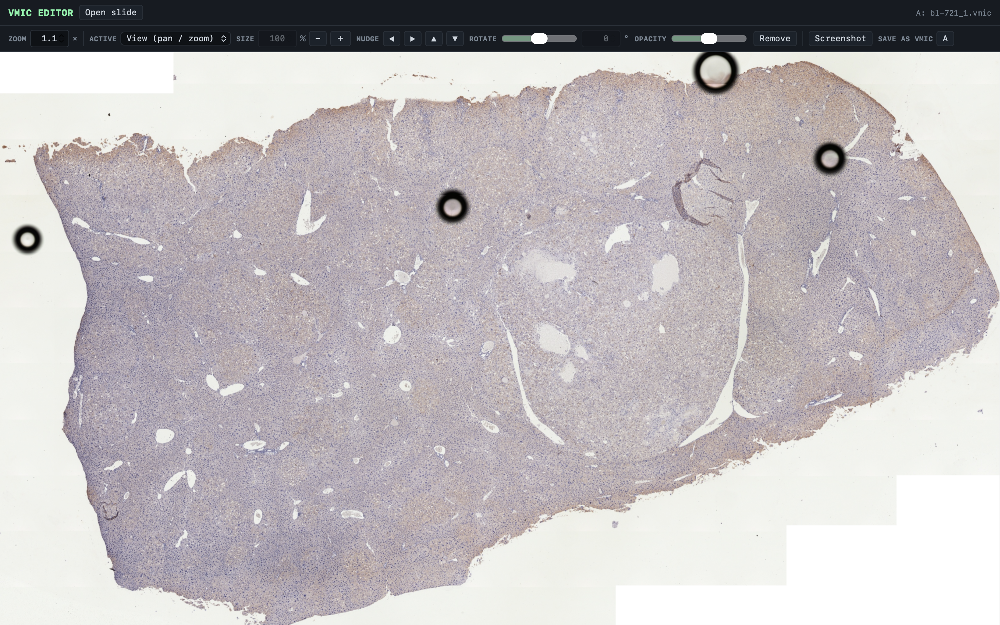

PreciPoint slide scanners write whole-slide images into a
proprietary .vmic container that almost nothing else
can open. VMIC Editor reads the format directly — streaming only
the tiles currently on screen — so a multi-gigabyte slide opens at
once, and up to five slides can be overlaid and aligned by hand.

PreciPoint scanners — the M8, O8, and Fritz — save whole
slides as .vmic files. Most imaging tools
can't read that container at all, and the usual
workaround is to convert each slide to a BigTIFF first:
a slow step that writes a file far larger than the
original and has to finish before anything can be looked
at.
The work that prompted this needed the opposite of that. Comparing serial sections and stains means having several slides open at the same time and nudging them into register against each other — quick, iterative, and visual. A convert-then-open pipeline makes that expensive enough that you stop doing it.
A .vmic file turns out to be a ZIP inside a
ZIP, wrapped around an ordinary DeepZoom tile pyramid.
The inner container is stored uncompressed, which means a
reader can seek straight into it and pull out one tile
without unpacking anything. That single fact is what the
whole application is built on.
Because nothing is converted ahead of time, memory scales with what is on screen rather than with the size of the file or the number of slides open.
.vmic container to rendered tileUp to five slides can be open at once, in slots A to E. One is active at a time; dragging moves it, scrolling resizes it, and separate controls set its size, nudge, rotation, and opacity. Dropping a second slide to about half opacity and rotating it against the first is the whole serial-section workflow.
Zoom is typed rather than guessed at: the field takes an
exact factor relative to how the slide first appeared, so
1× always means the opening view and two
slides can be put at matching magnification.
Export writes the region currently in view for each open
slide to its own TIFF, reconstructed from the source
tiles rather than captured from the screen, with anything
outside the slide filled white. A rotation can also be
baked into a new .vmic at the original
dimensions.
The tool does the thing it was built for: slides open immediately at any size, several can be compared at once, and a region of interest leaves as a real TIFF rather than a screenshot. It runs on Windows, macOS, and Linux from a single Python entry point, and can be packaged as a standalone executable.
The limits are worth stating plainly. Rotated slides saved back out are valid DeepZoom and re-open in this tool, but whether PreciPoint ViewPoint accepts them is unverified — work on a copy. Saving keeps the original dimensions, so tissue in the extreme corners can be clipped once a slide is rotated. Saving a large slide stitches and re-tiles the full-resolution image, which is memory-hungry. Exports are capped at roughly 6000 px on the long edge and sampled from the pyramid level matching the current zoom.
Next on the list: automated serial-section registration
instead of aligning by eye, a pyvips-backed
export path for very large slides, a calibrated
micrometre scale bar read from slide metadata, and
per-slide annotation overlays.
Scope. This is research and educational software. It is not a medical device and is not intended for clinical diagnosis or primary review.
Author — Ty Zhang
Viewer — OpenSeadragon (BSD)
License — MIT
Source — github.com/huhudadaT/VMIC-Editor